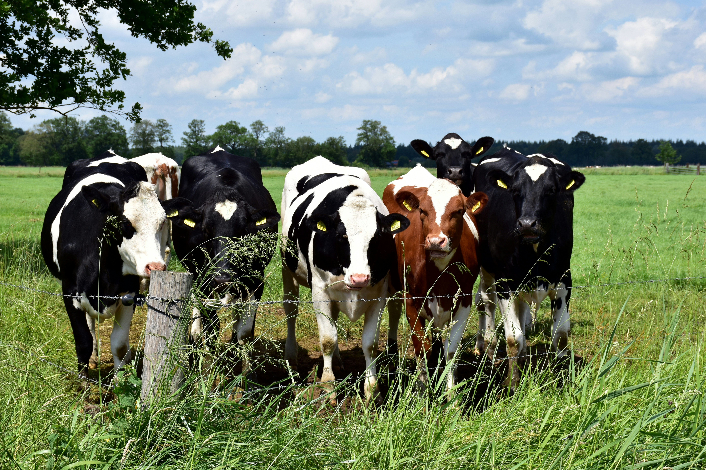
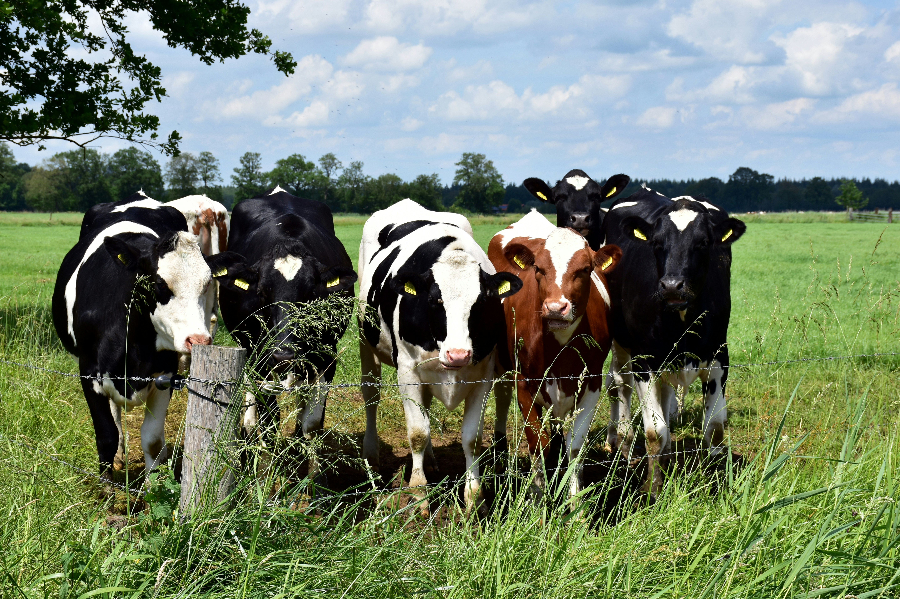

WELCOME TO KING'S FARM AND FOODS
Providing the best quality farm products and services, including Poultry, Ruminants, Aquaculture, Agronomy, and more.
Explore Our ProductsOur Services
Poultry Production
Fresh eggs, live broilers, and more.
Ruminant Production
Live goats, cows, fresh milk, and meat.
Aquaculture
Live catfish, smoked fish, and more.
Agro-Processing
Processed farm products like palm oil and flour.
What Our Customers Say
"Best farm products I've ever bought! Fresh and healthy." - Raji Fasilat
"Their customer service and delivery are top-notch." - Ayodeji Mariam
"The farm products are always fresh and delicious." - Abiodun Ifeoluwa
"I love their farm activities. It's always fun and educative." - Oloyede Olamilekan
"King's Farm is the best place to get quality farm products." Sholuade AbdulRazaq
Farm Activities

 
